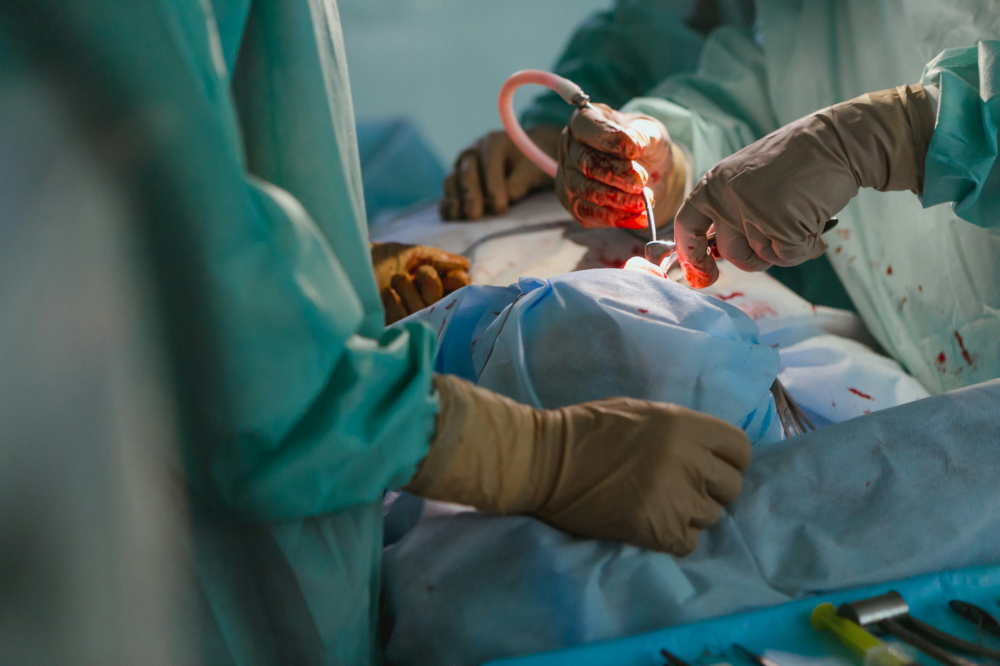

Knee
Arthroscopy
Knee arthroscopy is a minimally invasive procedure of diagnosing several knee problems such as torn meniscus, a misaligned patella, or even repair ligaments of the joint. It allows surgeons to observe the knee joint without any large incisions.

Total hip
Replacement
Total Hip Replacement is used to treat degenerative arthritis in the hip joint. During the surgical procedure, both damaged surfaces of the hip joint are replaced with a prosthetic joint.

Total Knee
Total Knee
Replacement
Total knee replacement is a surgical intervention for those with diseased knees to be replaced with artificial material typically metal lining to restore the joint functionality.